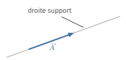
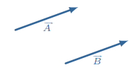
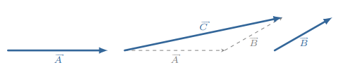
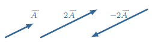
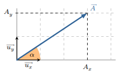
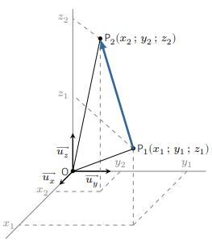
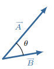
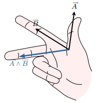

Une grandeur vectorielle, un vecteur, que nous noterons \(\overrightarrow{A}\), est
caractérisée de manière unique par :
une norme positive, notée \(\left\|\overrightarrow{A}\right\|\)
une direction
un sens

Représentation d’une grandeur vectorielle.
On le représente par un segment orienté (une flèche) dont la longueur est proportionnelle à
\(\left\|\overrightarrow{A}\right\|\). En physique, la norme représente la valeur de la
grandeur. Par exemple, la norme d’un vecteur force est son intensité en newton, celle du
vecteur vitesse est sa valeur en mètre par seconde, celle d’un vecteur déplacement s’exprime
en mètre, etc.
Un vecteur de norme nulle, ne présente ni sens ni direction. On l’appelle vecteur nul et
le note \(\overrightarrow{0}\).
Deux vecteurs sont égaux lorsqu’ils ont même direction, même sens et même norme. Autrement
dit on est libre de déplacer un vecteur tant qu’on ne change ni son orientation ni sa norme.

Deux vecteurs identiques.
Propriétés
La somme de deux vecteurs \(\overrightarrow{A}\) et \(\overrightarrow{B}\) est un vecteur
(notons le \(\overrightarrow{C}\)). Il s’obtient en mettant bout à bout les flèches
associées à \(\overrightarrow{A}\) et \(\overrightarrow{B}\), puis en joignant les
extrémités. Insistons sur le fait qu’en physique on ne peut sommer que deux grandeurs
vectorielles de même dimension : ajouter un vecteur force et un vecteur vitesse n’a
strictement aucun sens.

Somme de deux vecteurs.
On peut vérifier géométriquement les propriétés suivantes :
Si \(\lambda\) est un réel et \(\overrightarrow{A}\) un vecteur, alors
\(\lambda\overrightarrow{A}\) est un vecteur colinéaire à \(\overrightarrow{A}\) :
leur droite support sont parallèles. Si \(\lambda \gt 0\), \(\lambda\overrightarrow{A}\)
présente le même sens que \(\overrightarrow{A}\), si \(\lambda \lt 0\),
\(\lambda\overrightarrow{A}\)est de sens opposé.
Concernant les normes on a la relation suivante :
\(\left\|\lambda\overrightarrow{A}\right\| = \left|\lambda\right|
\left\|\overrightarrow{A}\right\|\).

Multiplication par une constante.
Base vectorielle
Généralités
On dit que deux vecteurs \(\left( \overrightarrow{u_1}, \overrightarrow{u_2}\right)\)
forment une base \(\mathcal{B}\) du plan, si tout vecteur du plan peut s’exprimer comme une
combinaison linéaire de ces vecteurs de base :
$$
\quad \overrightarrow{A} = A_1\overrightarrow{u_1} + A_2\overrightarrow{u_2} =
\begin{pmatrix} A_1 \\ A_2 \end{pmatrix}
$$
\(A_1\) et \(A_2\) désignent les composantes du vecteur \(\overrightarrow{A}\) dans la base
\(\mathcal{B}\).
Base cartésienne
Il s’agit d’une base orthonormée : les vecteurs de base ont pour norme 1 et sont
perpendiculaires entre eux. Dans un espace à deux dimensions, la base cartésienne est formée
de deux vecteurs : \(\left( \overrightarrow{u_x}, \overrightarrow{u_y}\right)\) avec
\( \left\|\overrightarrow{u_x}\right\|= \left\|\overrightarrow{u_y}\right\|=1\) et
\(\overrightarrow{u_x} \perp \overrightarrow{u_y}\).
Dans le plan, il est aisé d’exprimer les composantes cartésiennes d’un vecteur en fonction
de sa norme et de l’angle que forme le vecteur avec un des axes cartésiens :
$$
\quad \overrightarrow{A} =
\begin{pmatrix}
A_x = A\cos \alpha \\
A_y = A\sin \alpha
\end{pmatrix}
$$

Base cartésienne.
Repère d’espace
Un repère d’espace est constitué d’un point \(O\), appelé origine, et d’une base de deux
vecteurs \(\left( \overrightarrow{u_1}, \overrightarrow{u_2}\right)\) si on se place dans le
plan euclidien, ou de trois vecteurs \(\left( \overrightarrow{u_1}, \overrightarrow{u_2},
\overrightarrow{u_3} \right)\) dans l’espace euclidien à trois dimensions.
Les coordonnées \(\left(x,y,z\right)\) d’un point \(P\) dans un repère tridimensionnel sont
les composantes du vecteur \(\overrightarrow{OP}\) :
$$
\quad \overrightarrow{OP} = x \overrightarrow{u_1} + y \overrightarrow{u_2}
+z \overrightarrow{u_3}
$$
Considérons deux points, \(P_1\) et \(P_2\) de coordonnées \(\left(x_1,y_1,z_1\right)\) et
\(\left(x_2,y_2,z_2\right)\). Le vecteur \(\overrightarrow{P_1P_2}\) s’écrit :
$$
\quad \overrightarrow{P_1P_2} = \overrightarrow{P_1O} + \overrightarrow{OP_2}
= \overrightarrow{OP_2} - \overrightarrow{OP_1}
= \begin{pmatrix}
x_2-x_1 \\
y_2-y_1 \\
z_2-z_1
\end{pmatrix}
$$

Exemple de repère cartésien.
Vecteur lié
En physique, certaines grandeurs ont les attributs d’un vecteur (une norme, une direction et
un sens) tout en présentant une caractéristique supplémentaire : un point
d’application. C’est le cas de la force, objet fondamental de la mécanique.
On modélise ce type de grandeur à l’aide du concept de vecteur lié, ou pointeur. Un vecteur
lié est un couple formé par un vecteur \(\overrightarrow{v}\) et un point \(A\); on le note
\(\left(A,\overrightarrow{v}\right)\).
Produit scalaire
Définition
Le produit scalaire de deux vecteurs \(\overrightarrow{A}\) et \(\overrightarrow{B}\), noté
\(\overrightarrow{A} \cdot \overrightarrow{B}\), est le nombre réel (ou scalaire,
d’où son nom) :
$$
\quad \boxed{ \overrightarrow{A} \cdot \overrightarrow{B} \overset{def}{=}
\left\|\overrightarrow{A}\right\|
\times \left\|\overrightarrow{B}\right\| \times \cos(\theta) }
$$
où \(\theta\) est l’angle formé par les deux vecteurs. Notons qu’il n’est pas nécessaire
d’orienter les angles pour calculer un produit scalaire.

Angle formé par deux vecteurs.
Le produit scalaire est positif quand l’angle est aigüe, négatif quand il est obtus.
Propriétés
Le produit scalaire est commutatif : \(\overrightarrow{A} \cdot \overrightarrow{B} =
\overrightarrow{B} \cdot \overrightarrow{A}\)
Le produit scalaire est distributif : \(\overrightarrow{A} \cdot
\left( \overrightarrow{B} + \overrightarrow{C} \right) = \overrightarrow{A} \cdot
\overrightarrow{B} + \overrightarrow{A} \cdot \overrightarrow{C} \)
Le carré scalaire donne le carré de la norme : \(\overrightarrow{A} \cdot
\overrightarrow{A} = \left\|\overrightarrow{A}\right\|^2\).
Si \(\overrightarrow{A} \perp \overrightarrow{B}\) alors \(\overrightarrow{A} \cdot
\overrightarrow{B} = 0\).
Dans une base cartésienne, le produit scalaire s’exprime simplement en fonction des
composantes :
$$
\quad \overrightarrow{A} \cdot \overrightarrow{B} =
\begin{pmatrix}
A_x \\
A_y \\
A_z
\end{pmatrix}
\cdot
\begin{pmatrix}
B_x \\
B_y \\
B_z
\end{pmatrix} =
A_xB_x + A_yB_y + A_zB_z
$$
En conséquence, la norme \(\left\|\overrightarrow{A}\right\|\) d’un vecteur exprimé dans une
base orthonormée est donnée par la relation :
$$
\quad \left\|\overrightarrow{A}\right\| = \sqrt{ {A_x}^2 + {A_y}^2 + {A_z}^2 }
$$
Produit vectoriel
Définition
Le produit vectoriel des vecteurs \(\overrightarrow{A}\) et \(\overrightarrow{B}\), noté
\(\overrightarrow{A} \wedge \overrightarrow{B}\), est vecteur aux caractéristiques
suivantes :
sa direction est perpendiculaire au plan formé par\(\overrightarrow{A}\) et
\(\overrightarrow{B}\)
sons sens est donné par la règle des trois doigts de la main droite
sa norme vaut \( \left\|\overrightarrow{A} \wedge \overrightarrow{B}\right\| =
\left\|\overrightarrow{A}\right\| \times \left\|\overrightarrow{B}\right\| \times
\left|\sin(\theta)\right|\) où \(\theta\) est l’angle formé par \(\overrightarrow{A}\)
et \(\overrightarrow{B}\)

Règle de la main droite.
Propriétés
Le produit vectoriel est distributif :\(\overrightarrow{A} \wedge
\left( \overrightarrow{B} + \overrightarrow{C} \right) = \overrightarrow{A} \wedge
\overrightarrow{B} + \overrightarrow{A} \wedge \overrightarrow{C} \)
Le produit vectoriel est anticommutatif :\(\overrightarrow{A} \wedge
\overrightarrow{B} = - \left( \overrightarrow{B} \wedge \overrightarrow{A} \right) \)